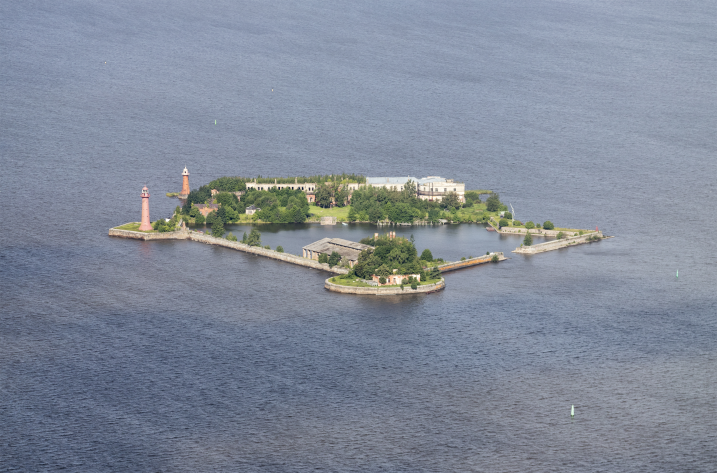

Форт Кроншлот - вид с моря. Источник: открытые источники
Основная информация
| Название | Форт «Кроншлот» (Коронный замок) |
|---|---|
| Дата основания | 7 (18) мая 1704 года (освящение), перестроен в 1850-1863 гг. |
| Архитекторы и инженеры | Пётр I (идея), великий князь Константин Николаевич (проект 1848 г.), инженеры А.Д. Готман, Э.И. Тотлебен |
| Статус | Объект культурного наследия федерального значения |
История создания
Основание (1704): Форт построен во время Северной войны для защиты Санкт-Петербурга от шведов. Первоначально назывался Кроншлосс (Коронный ключ), затем переименован в Кроншлот (Коронный замок). 7 (18) мая 1704 года освящён новгородским митрополитом Иовом — эта дата считается днём рождения Кронштадта.
Оборона от шведов: В первые годы существования форт дважды успешно выдержал оборону от шведских эскадр.
Наводнение 1824 года: Во время наводнения были полностью разрушены 4 батареи, остальные нуждались в восстановлении.
Реконструкция (1850-1863): Новый проект реконструкции составлен великим князем Константином и доложен Николаю I в мае 1848 года. Строительство продолжалось с 1850 по 1863 год.
Вооружение в разные периоды
| Период | Тип орудий | Количество | Калибр |
|---|---|---|---|
| 1704-1824 | Пушки чугунные | до 120 | 12-36 фунтов |
| 1863-1914 | Нарезные орудия | 84 | 6-11 дюймов |
| 1914-1917 | Береговые пушки Канэ | 36 | 130-203 мм |
| 1941-1945 | Зенитные орудия | до 20 | 76-85 мм |
Роль в войнах
Северная война (1700-1721): Ключевая роль в защите Санкт-Петербурга от шведского флота.
Крымская война (1853-1856): Форт входил в систему обороны Кронштадта, не был взят англо-французской эскадрой.
Первая мировая война (1914-1918): Прикрывал подступы к Петрограду с моря.
Великая Отечественная война (1941-1945): Зенитная артиллерия форта защищала Кронштадт и Ленинград от воздушных налётов.
Современное состояние и статус охраны
Статус: Объект культурного наследия федерального значения (Постановление Правительства РФ № 527 от 10.07.2001).
Состояние: Хорошее. Проведена реставрация.
Использование: Музейный объект, доступен для организованных экскурсий.
Доступность: Доступ по специальным разрешениям. Возможны экскурсии по воде.
Источники: Комитет по культуре Ленинградской области; Министерство культуры РФ.
Интересные факты
- Форт «Кроншлот» был освящён 7 (18) мая 1704 года. Эта дата традиционно считается днём рождения Кронштадта.
- Первый «Кроншлот» был деревянным, его освятили 7 мая 1704 года. На освящении присутствовал царь. Уже 12 июля 1704 форт вступил в бой с шведской эскадрой и отразил вражеские атаки. Шведы повторяли свои попытки — в ответ русские строили на Котлине батареи.
- По одной из версий, деревянный макет первого укрепления «Кроншлот» сделал сам Пётр I. По другим версиям, над моделью работал Доменико Трезини. Все форты Кронштадта, включая «Кроншлот», возведены на искусственных территориях.
- В 1824 году «Кроншлот» был превращен в пятиугольник бастионного начертания в 120 орудий, с внутренней гаванью. «Кроншлот» перестраивали много раз, улучшая его боеспособность, вплоть до 1863 года. И только в 1896-м форт вывели из состава боевых, устроив здесь склады. В последнее время здесь была станция размагничивания кораблей. До сих пор «Кроншлот» принадлежит военным, и во внутреннюю гавань не зайти. На форте романтическое запустение: маяк на южной оконечности, склады, остатки корабельных двигателей. На одной из казарменных стен герб СССР образца 1924 года, где только шесть союзных республик.
Источники информации
- РГВИА (Российский государственный военно-исторический архив), ф. 1, оп. 1, д. 1459, д. 6792
- РГАВМФ (Российский государственный архив военно-морского флота), ф. 417, оп. 1, д. 237
- Раздолгин А.А. «Кронштадтская крепость: история и современность». — СПб.: Лениздат, 2003.
- Широкорад А.Б. «История крымских войн». — М.: Вече, 2004.
- «Боевой путь Краснознамённого Балтийского флота». — М.: Воениздат, 1990.
- Комитет по культуре Ленинградской области
📸 Фотогалерея форта Кроншлот
